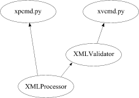
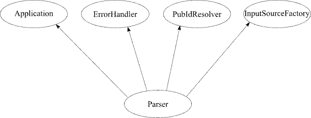
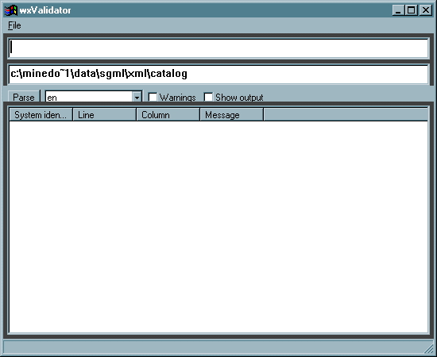

xmlproc has been designed in a highly modular fashion, with the intention that it should be possible to reuse the modules in different contexts and applications. Emphasis has been placed on flexibility, leading to a rather large and perhaps bewildering interface. This document attempts to explain the different pieces and how they fit together.
xmlproc ships with two command-line parser applications for XML parsing. They are not useful for incorporating xmlproc in your own applications, but can be used to check that xmlproc is working, to verify documents and also to see how the parser interprets documents, by making them output canonical XML or ESIS.
The diagram below shows how these applications use the xmlproc APIs.
As the diagram shows one application (xpcmd.py) uses the object called XMLProcessor. This is the well-formedness parser that does not read the external DTD and which does not validate. The second application (xvcmd.py) uses an object called XMLValidator, which again uses the well-formedness parser XMLProcessor for basic parsing, but provides full validation on top of this.
The command-line interfaces are documented here.
The xmlproc distribution also includes a command-line application dtdcmd.py, which only uses the DTD parsing APIs of xmlproc and can parse DTD files directly. The command-line interface is as follows:
python dtdcmd.py [--list]+
Here --list makes the parser list all declarations after parsing a DTD, and urltodtd is a list of one or more DTD file names or URLs.
The command-line application dtd2schema.py converts DTDs into equivalent XML Schema documents. The application takes one mandatory argument (the system identifier of the DTD) and one optional argument (the file name of the output document). If no output file name is specified, one is inferred from the input file name.
The converter tries to do some naive inference of attribute groups and will produce output with attribute groups inferred from the DTD structure.
If you want to use xmlproc in an application of your own what you do is basically what I did with xpcmd.py and xvcmd.py: you use the xmlproc modulse in an application to provide it with XML parsing functionality. On top of that you must build whatever you want to use xmlproc for yourself. (In the case of xvcmd.py and xpcmd.py this is simply outputting parse results to the console and interpreting command-line options.
The diagram below shows the main objects involved in this API:
The central object is the Parser object, which can be either an XMLProcessor or an XMLValidator (they have the same interface, but only the latter validates and the former is faster). When it is created the Parser creates the four objects shown in the diagram. It also provides methods that can be used to make it use objects that you provide instead of these objects. (See the documentation for details.)
The roles of these four objects are:
So, to act on the document content, make an Application object and tell the parser to use it. To control error reporting, make an ErrorHandler. To control the resolution of public identifiers (and also to remap system identifiers), make a PubIdResolver. To add support for new kinds of URLs or to provide your own support for a class of URLs, make an InputSourceFactory.
from xml.parsers.xmlproc import xmlproc
class MyApplication(xmlproc.Application):
pass # Add some useful stuff here
p=xmlproc.XMLProcessor() # Make this xmlval.XMLValidator if you want to validate
p.set_application(MyApplication())
p.parse_resource("foo.xml")
xmlproc includes a GUI application that can be used to parse XML documents in the wxValidator.py application. This application uses wxPython to create a more user-friendly interface, as shown below:
